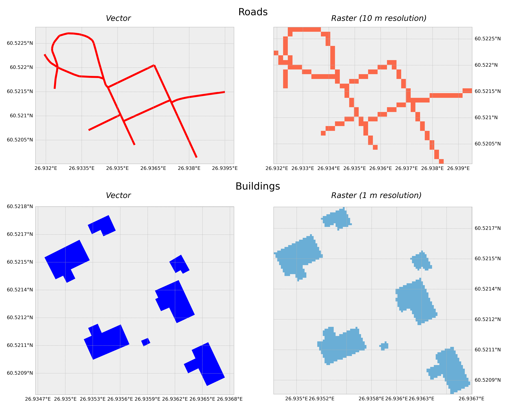
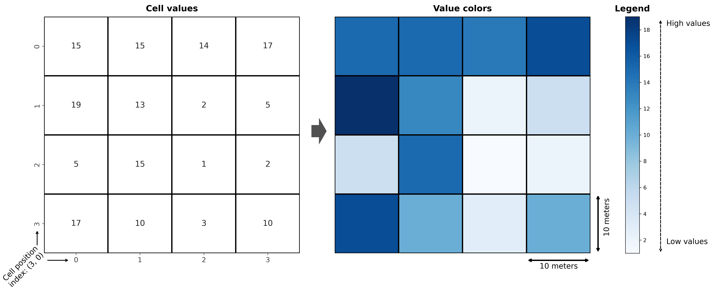
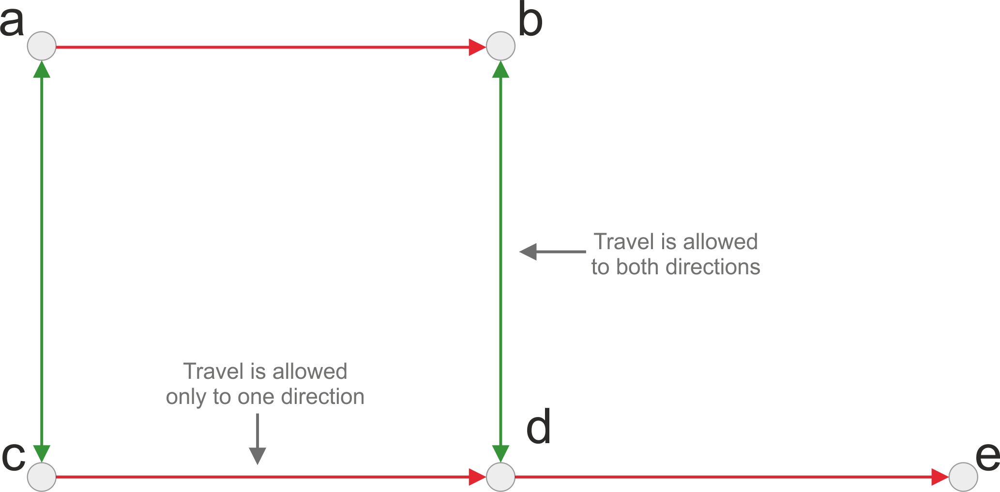
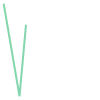

Big Data: Intro to GeoData Analysis
MSDE
Lviv University
Why to use Python for Geoscience?
Why?
- Python has an extensive ecosystem of libraries and tools for GIS: you can do almost anything with spatial data. In fact, there is an enormous geospatial industry that is heavily relying on open source Python libraries.
- Python GIS libraries are easy to learn: there are tons of good and free resources available to learn doing GIS analysis with Python for free (the online version of this book is one example!).
- Python is highly efficient: used for analysing big (and small) geospatial data.
- Python is highly flexible: supports hundreds of spatial data formats (most likely many which you, or us, have never heard of).
Why to use Python for Geoscience?
Why?
- Python allows to mix and match various libraries: You can combine different libraries and methodological approaches together and create sophisticated analytical pipelines.
- Everything is free: you don’t need to buy a license for using the tools.
- You will learn and understand more deeply how different geoprocessing operations work.
- By using Python’s open source libraries and codes, you support open science by making it possible for everyone to reproduce your work, free-of-charge.
- You can plug-in and chain different third-party software (not necessarily written in Python) which allow you to build e.g. fancy web-GIS applications (using e.g. KeplerGL, Dask or GeoDjango for developing the user interface and having PostGIS as a back-end database).
Why to use Python for Geoscience?
Important
- Python libraries are developing fast: an active open source community is continuously improving existing libraries, or creating new libraries for tasks that require new tools. However, it is good to be aware that fast development is not necessarily a guarantee of stability or quality. Hence, as for any open source library (with any programming language), it is good to investigate a bit before starting to use a new open source GIS library whether it has been actively maintained and if it seems to have an active developer community.
- One drawback of such a broad open source ecosystem compared to using a specific GIS software such as ArcGIS, is that open source tools and their documentation are spread under different Python modules and created by different developers.
Core libraries
Core libraries
- Core vector libraries:
geopandas,pyproj,shapely - Core raster libraries:
xarray,rioxarray,rasterio
Python ecosystem
Objectives
- How can we represent geographic features such as roads, buildings, lakes or mountains on a computer?
- How can we read an image taken with a satellite sensor and use that in our analyses?
- How can we create a spatial network that can be used for navigation and finding the fastest route from A to B?
Ways to represent spatial data
Data model
- vector
- raster
- spatio-temporal
- topological
Data models
Construction
- vector: constructed from points in geographical space which are connected to each other forming lines and polygons.
- raster: constructed from rectangular cells (also called as pixels) that form a uniform grid, i.e. a raster. The grid is associated to specific geographical location and each cell of the grid contains a value representing some information, such as elevation, temperature or presence/absence.
Data models
Data models
Note
The roads on the top-left could be represented as a network, which is a vector-based data structure consisting of intersections (called nodes) that are represented as points, and streets connecting the nodes that are represented as lines (called edges).
Because the vector and raster data models are very different, there are typically a different set of GIS tools and methodologies applied for raster and vector data. However, the vector and raster worlds are not totally isolated from each other, as in many cases it is useful to convert the data from one format to another for specific operations.
Vector data
Geometry types
- points
- lines
- areas.
Specification
Defined in Simple Features Access Specification, which is a standard (ISO 19125-1) formalized by the Open Geospatial Consortium and International Organization for Standardization.
Text representation follows a specification called {term}Well-known text (WKT).
The geometries can also be represented in binary format, which is called {term}Well-known binary (WKB).
Vector data
Point
Point-object represents a single point in geographic space and the location of the point in space is determined with coordinates.
Points can be either two-dimensional. A single pair of coordinates forming a point is commonly called as a coordinate tuple.
LineString
LineString-object (i.e. a line) represents a sequence of points joined together to form a line. Hence, a line consist of a list of at least two coordinate tuples.
Polygon
Polygon-object represents a filled area that consists of a list of at least 3 coordinate tuples that forms the outerior ring (LinearRing) and a possible list of holes.
Vector data
Collections
It is also possible to have a collection of geometric objects (i.e. multiple points, lines or areas) represented as MultiPoint, MultiLineString and MultiPolygon.
Geometry collections can be useful for example when you want to present multiple building polygons belonging to the same property as a single entity.
Vector data

Attribute data
Definition
- information associated with geometry
- describe the given entity with various possible characteristics.
- building example:
- number of floors
- height of the building
- how many people live there.
- always linked to the geometries via a unique feature identifier (
Shapefiles) or structurally (GeoJSON)
Vector data formats
Main options
- file saved to disk
- spatially-aware database, such as PostGIS.
Around 80 file formats are supported the Geospatial Data Abstraction Library (GDAL) [^GDAL].
Vector data formats
Data formats
- Shapefile: Still a widely used data format for storing geospatial vector data, developed and introduced by ESRI in the early 1990s.
.shp: feature geometries.shxpositional index for the feature geometries.dbfattribute information..prjinformation about the coordinate reference system of the dataset.
Vector data formats
Data formats
- GeoJSON: GeoJSON [^geojson] is an open standard format for encoding a variety of geographic data structures along with their attribute data which can be stored into a simple text file. Variation:
TopoJSON
{"type": "FeatureCollection",
"features": [
{"type": "Feature", "properties": {"id": 75553155, "timestamp": 1494181812},
"geometry": {"type": "MultiLineString",
"coordinates": [[[26.938, 60.520], [26.938, 60.520]], [[26.937, 60.521],
[26.937, 60.521]], [[26.937, 60.521], [26.936, 60.522]]]
}
},
{"type": "Feature", "properties": {"id": 424099695, "timestamp": 1465572910},
"geometry": {"type": "Polygon",
"coordinates": [[[26.935, 60.521], [26.935, 60.521], [26.935, 60.521],
[26.935, 60.521], [26.935, 60.521]]]
}
}
]
}
Vector data formats
Data formats
GeoPackage: GeoPackage uses a SQLite database container to store the data. Can be used for both vector and raster (limited support).
GeoParquet: GeoParquet is one of the newest file formats to store geographic data. In this format, the data is stored in Apache Parquet which is a popular open source, column-oriented data file format designed for efficient data storage and retrieval.
GML: Geography Markup Language (GML) is an XML based data format. GML serves as a modeling language for geographic systems as well as an open interchange format for geographic transactions on the Internet. Able to integrate all forms of geographic information, including not only conventional “vector” or discrete objects, but also coverages and sensor data.
Raster data and arrays
Basics
- the data is represented as arrays of cells, also called as pixels, to represent real-world objects or continuous phenomena.
- digital cameras typically capture the world using Red, Green and Blue (RGB) colors and stores this information in pixels as separate layers (as called as {term}
bands orchannels) for each color. - In a similar manner, we can store other information to pixels, such as elevation or temperature data (which have only one layer or
band), or more detailed spectral information that capture how the light reflects from objects on earth at different wave-lengths (which is what e.g. satellite sensors do). - we might have tens or even hundreds of different bands (as with hyperspectral imaging)
Raster data and arrays
Variety
spatial resolution, i.e. the size of a single pixeltemporal resolution, i.e. how frequently the data is captured from the same area of the Earthspectral resolution, i.e. the number and location of spectral bands in the electromagnetic spectrumradiometric resolution, i.e. the range of available brightness values (bit depth), usually measured in bits (binary digits)spatial extent, i.e. how large area of the world a single image representscoordinate reference system, i.e. in what CRS the data is represented
Raster data and arrays
Raster data and arrays
Bit depth
- One fundamental way to characterize a raster dataset is based on their
bit depth(also calledpixel depth) that provides information about the {term}radiometric resolutionof the data. - The bit depth defines the range of distinct values that the raster can store. For example, a 1-bit raster can only store 2 distinct values: 0 and 1, whereas 8-bit raster can have 256 different values that range between 0 to 255.5.
Raster data and arrays

Examples of raster bit depths.
Raster data formats
Formats
- GeoTIFF: GeoTIFF is a popular open, non-proprietary raster data format based on
TIFF formatoriginally developed at NASA in the early 90’s. - COG: A Cloud Optimized GeoTIFF (COG) is a file format based on GeoTIFF. COG files are typically hosted on HTTP file servers. The format can enable more efficient workflows with large data files by leveraging the ability of users to retrieve just the parts of the file that they need, instead of downloading the whole file every time. The file extension of COG is
.tif(i.e. the same as with GeoTIFF). - NetCDF: Network Common Data Form (NetCDF) is a portable, self-describing and scalable file format for storing array-oriented multidimensional scientific data, commonly used for storing earth science data. Variables stored in NetCDF are often measured multiple times per day over large (e.g. continental) areas. The file extension of NetCDF is
.nc4.
Raster data formats
Formats
- ASCII Grid: The ASCII Raster File format is a simple format that can be used to transfer raster data between various applications. The file format was originally developed by ESRI and it is also known as Arc/Info ASCII grid. The file extension of ASCII Raster File is
.asc. - IMG: The ERDAS Imagine file format (IMG) is a proprietary file format that was originally created by an image processing software company called ERDAS. The file can be accompanied with an .xml file which stores metadata information about the raster layer. The file extension of Imagine file format is
.img.
Representing spatial networks
Networks
- Study of networks is based on
graph theory - a very useful data structure because it allows to define and construct neighborhood relationships that are central to geographic data science / GIScience.
A network basically consists of couple of core elements:
- nodes (e.g. intersections on a street, or a person in social network), and
- edges (a link that connects the nodes to each other)
Representing spatial networks

Representing spatial networks
Network attribute data
- node attributes: typically contain the geographical information associated with the graph, such as the coordinates of the intersections.
- edge attributes: contain information about which nodes are connected to each other, and what is the
costto travel between the nodes measured e.g. as time or distance.
Representing spatial networks

Representing spatial networks
Directionality
directedundirected
Representing spatial networks
| edge_id | from_node | to_node | description |
|---|---|---|---|
| 1 | A | C | edge for direction 1 |
| 2 | C | A | edge for direction 2 |
Representing spatial networks
Commonly used network data formats
- GML: Graph Modelling Language
- GraphML: consists of a language core to describe the structural properties of a graph and extension mechanism to add application-specific data. The file extension of GraphML is
.graphml.
Coordinate reference systems
CRS
Georeferencing
Majority of all the information in the world can be traced to a specific location: This process of attaching information about a location to a piece of information is commonly referred as georeferencing or geocoding.
Examples:
- place names (varying accuracy)
- postal codes (accuracy at areal level)
- postal addresses (accuracy at door/mailbox level)
- latitude and longitude coordinates (up to millimeter level accuracy).
CRS
Definition
A CRS tells the GIS tools how the coordinates or geometries are related to the places on Earth. In principle, every geographic dataset should have specific CRS-related information attached to it (if not, it might be difficult or impossible to use the data in GIS). This kind of additional information is called metadata.
A CRS can be either:
- geographic (based on latitude and longitude)
- or projected (based on a Cartesian coordinate system).
Coordinate reference system (CRS)
Main components
- Datum: A datum specification consists of a model for Earth’s size and shape, such as a reference ellipsoid or a geoid, which describes the average sea level surface of the Earth. One of the most commonly used datums is the World Geodetic System (WGS84). Datum also contains:
- information about the origin of the coordinate system, i.e. the reference point at which the ellipsoid/geoid is tied to a known location on Earth
- orientation parameters, which describe the orientation of the coordinate system with respect to the Earth’s surface. They contain information about the tilt of the axis and the position of the origin relative to the Earth’s surface.
- Map projection: The projection defines the mathematical transformation used to map the Earth’s surface onto a two-dimensional plane.
Coordinate reference system (CRS)
Main components
- Additional Parameters:
- the central meridian
- standard parallel
- scale factor
- origin and orientation of the coordinate system
- the conversion between the projected coordinates and the geographic coordinates.
Map projection

Map projection

Map projection
Distortions
We always make approximations and hence lose something.
projection needs to be chosen according to the purpose of use, in order to preserve specific aspects of the map that are the most important to the user:
- shapes of objects
- their surface areas
- correct distances between locations
- the compass direction
Map projection
Types
- If we want to preserve angles and ratios of distances, we speak of a conformal, or angle-preserving projections (such as Mercator projection). These kind of projections has historically been important e.g. for ship navigation. With conformal map projection, both the distances and surface areas are distorted, except at some special points of the map.
- If we want to preserve correct area measure, we speak of an equivalent or equal-area projection (such as Mollweide or Albers equal area). Here, the angles and shapes are distorted, again with the exception of special points or lines.
- If we want to preserve correct distances, we speak of an equidistant projection (such as Azimuthal equidistant). A projection can be equidistant only for a certain point (i.e. it is centered to specific location) or along certain lines, never everywhere.
Map projection
CRS
Storing CRS information
- EPSG registry (Geodetic Parameter Dataset): This is a public registry maintained by the European Petroleum Survey Group (EPSG) that contains information on a wide range of coordinate reference systems, including geographic and projected CRSs, and datums. It is widely used in GIS software and is an open and freely accessible resource.
EPSG codes are numbers that identify different CRS from each other. These numbers, such as 4326 for WGS84 coordinate system, are commonly used to determine a CRS for a specific dataset or when reprojecting the data, because these simple numbers are easy to remember and use.
CRS
Storing CRS information
- PROJ system: PROJ is another system and open source library for storing and transforming CRS information from one system to another. The CRS information in this one is commonly stored as a “proj-strings”, which includes information about the coordinate system as a plain text following specific naming conventions for the parameters.
As an example, PROJ4 text for the ETRS-TM35FIN coordinate system (EPSG:3067) commonly used in Finland, is described with following text:
+proj=utm +zone=35 +ellps=GRS80 +towgs84=0,0,0,0,0,0,0 +units=m +no_defs +type=crsCRS
Storing CRS information
- OGC WKT: Open Geospatial Consortium’s (OGC) well-known text (WKT) representation.
The following shows how the ETRS-TM35FIN coordinate system (EPSG:3067) would be presented as OGW WKT:
PROJCS["ETRS89 / TM35FIN(E,N)",
GEOGCS["ETRS89",
DATUM["European_Terrestrial_Reference_System_1989",
SPHEROID["GRS 1980",6378137,298.257222101,
AUTHORITY["EPSG","7019"]],
TOWGS84[0,0,0,0,0,0,0],
AUTHORITY["EPSG","6258"]],
PRIMEM["Greenwich",0,
AUTHORITY["EPSG","8901"]],
UNIT["degree",0.0174532925199433,
AUTHORITY["EPSG","9122"]],
AUTHORITY["EPSG","4258"]],
PROJECTION["Transverse_Mercator"],
PARAMETER["latitude_of_origin",0],
PARAMETER["central_meridian",27],
PARAMETER["scale_factor",0.9996],
PARAMETER["false_easting",500000],
PARAMETER["false_northing",0],
UNIT["metre",1,
AUTHORITY["EPSG","9001"]],
AXIS["Easting",EAST],
AXIS["Northing",NORTH],
AUTHORITY["EPSG","3067"]]Representing geodata in vector format
Vector format
Shapely
- Creating and representing vector-based geometric objects is most commonly done using the
shapelylibrary which is one of the fundamental libraries in Python GIS ecosystem when working with geographic data. - Under the hood
shapelyuses a C++ library calledGEOSto construct the geometries. GEOSis one of the standard libraries behind various GIS software, such as PostGIS and QGIS.- Objects and methods available in
shapelyadhere mainly to the Open Geospatial Consortium’s Simple Features Access Specification
Vector format
Creating Point geometries
Let’s start by creating a simple Point object.
Vector format
We can use the print() command to get the text representation of the point geometry as Well Known Text (WKT).
In the output, the letter Z after the POINT indicates that the geometry contains coordinates in three dimensions (x, y, z):
It is also possible to access the WKT character string representation of the geometry using the .wkt attribute:
Vector format
Vector format
Creating LineString geometries

Vector format
Line Attributes
As a result, we have a list of coordinate tuples (x,y) inside a list. If you need to access all x -coordinates or all y -coordinates of the line, you can do it directly using the xy attribute:
Vector format
Line Attributes
It is possible to retrieve specific attributes such as length of the line and the center of the line (centroid) straight from the LineString object itself:
Vector format

Vector format
Polygon info
You can get more information about the Polygon object by running help(poly) of from the shapely online documentation. Here is a simplified extract from the output of help(Polygon):
class Polygon(shapely.geometry.base.BaseGeometry)
| Polygon(shell=None, holes=None)
|
| A two-dimensional figure bounded by a linear ring
|
| A polygon has a non-zero area. It may have one or more negative-space
| "holes" which are also bounded by linear rings. If any rings cross each
| other, the feature is invalid and operations on it may fail.
|
| Attributes
| ----------
| exterior : LinearRing
| The ring which bounds the positive space of the polygon.
| interiors : sequence
| A sequence of rings which bound all existing holes.
|
| Parameters
| ----------
| shell : sequence
| A sequence of (x, y [,z]) numeric coordinate pairs or triples.
| Also can be a sequence of Point objects.
| holes : sequence
| A sequence of objects which satisfy the same requirements as the
| shell parameters aboveVector format
Polygon holes
With the four coordinate tuples of the exterior, we can first create a polygon without a hole:

Vector format
Polygon holes
In a similar manner, we can make a Polygon with holes by passing the holes_coordinates variable into the parameter holes:

poly_with_hole.wkt:
POLYGON ((-180 90, -180 -90, 180 -90, 180 90, -180 90),
(-170 80, -170 -80, 170 -80, 170 80, -170 80))Vector format
Polygon attributes
Polygon centroid: POINT (6.22 -7.785333333333334)
Polygon Area: 86.789
Polygon Bounding Box: (2.2, -25.1, 9.26, 4.2)
Polygon Exterior: LINEARRING (2.2 4.2, 7.2 -25.1, 9.26 -2.456, 2.2 4.2)
Polygon Exterior Length: 62.16395199996553Vector format

Vector format
Vector format
Vector format
Exercise
Create examples of these shapes:
- Triangle
- Square
- Circle
GeoPandas Intro
GeoPandas Intro
Description
geopandaslibrary extends the data structures and data analysis tools available in thepandaslibrary to allow geospatial operations and the handling of coordinate reference systems.geopandasprovides a high-level, easy-to-use interface for vector data (like points, lines, and polygons) that integrates with the existingpandasdata analysis framework, as well as the extensive Python GIS ecosystem .
GeoPandas Intro
What is a GeoDataFrame?
- The main data structures in
geopandasareGeoSeriesandGeoDataFrame. GeoDataFrameis basically like apandasDataFramethat contains at least one dedicated column for storing geometries.- The geometry column is a
GeoSerieswhich contains the geometries asshapelyobjects (points, lines, polygons, multipolygons etc.).

GeoPandas Intro
Reading a file
_data/Austin/austin_pop_2019.gpkgSimilar to importing pandas, we will first import geopandas as gpd which allows us to start using the library. Then we will read the file by passing the filepath to .read_file() function of geopandas:
Let’s take a look at the data type of our data variable:
GeoPandas Intro
Exploration
Let’s have a closer look at the first rows of the data:
| pop2019 | tract | geometry | |
|---|---|---|---|
| 0 | 6070.0 | 002422 | POLYGON ((615643.487 3338728.496, 615645.477 3... |
| 1 | 2203.0 | 001751 | POLYGON ((618576.586 3359381.053, 618614.33 33... |
| 2 | 7419.0 | 002411 | POLYGON ((619200.163 3341784.654, 619270.849 3... |
| 3 | 4229.0 | 000401 | POLYGON ((621623.757 3350508.165, 621656.294 3... |
| 4 | 4589.0 | 002313 | POLYGON ((621630.247 3345130.744, 621717.926 3... |
The columns pop2019 and tract represent attribute information in our data, namely the number of people living on a given census tract and a unique id-number for the tract, wherease the column geometry contains the geographic data (polygons) for each census tract.
GeoPandas Intro
GeoPandas Intro
Exercise
Figure out the following information from input data:
- Number of rows?
- Number of census tracts (based on column
tract)? - Total population (based on column
pop2019)?
GeoPandas Intro
Geometries in geopandas
A geodataframe can have multiple columns containing geometries, and you can change which column should be considered as the “active geometry”. Let’s have a closer look at the .geometry attribute of our data:
0 POLYGON ((615643.487 3338728.496, 615645.477 3...
1 POLYGON ((618576.586 3359381.053, 618614.33 33...
2 POLYGON ((619200.163 3341784.654, 619270.849 3...
3 POLYGON ((621623.757 3350508.165, 621656.294 3...
4 POLYGON ((621630.247 3345130.744, 621717.926 3...
Name: geometry, dtype: geometryGeoPandas Intro
GeoPandas Intro
Geometries in geopandas
The same result can be achieved by using the syntax data.area. Let’s convert the area values from square meters to square kilometers and store them into a new column called area_km2:
| pop2019 | tract | geometry | area_km2 | |
|---|---|---|---|---|
| 0 | 6070.0 | 002422 | POLYGON ((615643.487 3338728.496, 615645.477 3... | 4.029772 |
| 1 | 2203.0 | 001751 | POLYGON ((618576.586 3359381.053, 618614.33 33... | 1.532030 |
| 2 | 7419.0 | 002411 | POLYGON ((619200.163 3341784.654, 619270.849 3... | 3.960344 |
| 3 | 4229.0 | 000401 | POLYGON ((621623.757 3350508.165, 621656.294 3... | 2.181762 |
| 4 | 4589.0 | 002313 | POLYGON ((621630.247 3345130.744, 621717.926 3... | 2.431208 |
GeoPandas Intro
GeoPandas Intro
Exercise
Create a new column pop_density_km2 and populate it with population density values (population / km2) calculated based on columns pop2019 and area_km2. Print out answers to the following questions:
- What was the average population density in 2019?
- What was the maximum population density per census tract?
GeoPandas Intro
Writing data into a file
It is possible to export the GeoDataFrame into various data formats using the .to_file() method. Let’s start by learning how we can write data into a GeoPackage. Before proceeding, let’s see how the data looks like at this point:
| pop2019 | tract | geometry | area_km2 | |
|---|---|---|---|---|
| 0 | 6070.0 | 002422 | POLYGON ((615643.487 3338728.496, 615645.477 3... | 4.029772 |
| 1 | 2203.0 | 001751 | POLYGON ((618576.586 3359381.053, 618614.33 33... | 1.532030 |
| 2 | 7419.0 | 002411 | POLYGON ((619200.163 3341784.654, 619270.849 3... | 3.960344 |
| 3 | 4229.0 | 000401 | POLYGON ((621623.757 3350508.165, 621656.294 3... | 2.181762 |
| 4 | 4589.0 | 002313 | POLYGON ((621630.247 3345130.744, 621717.926 3... | 2.431208 |
GeoPandas Intro
Writing data into a file
To be more explicit, you can use the driver parameter to specify the output file format for the data allowing you to write the data into numerous data formats (some lesser-known ones as well) supported by a software called GDAL which is used by geopandas under the hood for reading and writing data.
GeoPandas Intro
Exercise
Read the output file using geopandas and check that the data looks ok.
GeoPandas Intro
Reading vector data
When we use the .read_file() function for reading data in various formats, geopandas actually uses a Python library called pyogrio under the hood to read the data (which again depends on GDAL). It is easy to find out all the data formats that are supported by default by calling pyogrio.list_drivers():
{'PCIDSK': 'rw', 'PDS4': 'rw', 'VICAR': 'rw', 'PDF': 'rw', 'MBTiles': 'rw', 'EEDA': 'r', 'OGCAPI': 'r', 'ESRI Shapefile': 'rw', 'MapInfo File': 'rw', 'UK .NTF': 'r', 'LVBAG': 'r', 'OGR_SDTS': 'r', 'S57': 'rw', 'DGN': 'rw', 'OGR_VRT': 'r', 'Memory': 'rw', 'CSV': 'rw', 'GML': 'rw', 'GPX': 'rw', 'KML': 'rw', 'GeoJSON': 'rw', 'GeoJSONSeq': 'rw', 'ESRIJSON': 'r', 'TopoJSON': 'r', 'OGR_GMT': 'rw', 'GPKG': 'rw', 'SQLite': 'rw', 'WAsP': 'rw', 'OpenFileGDB': 'rw', 'DXF': 'rw', 'FlatGeobuf': 'rw', 'Geoconcept': 'rw', 'GeoRSS': 'rw', 'VFK': 'r', 'PGDUMP': 'rw', 'OSM': 'r', 'GPSBabel': 'rw', 'OGR_PDS': 'r', 'WFS': 'r', 'OAPIF': 'r', 'EDIGEO': 'r', 'SVG': 'r', 'Idrisi': 'r', 'ODS': 'rw', 'XLSX': 'rw', 'Elasticsearch': 'rw', 'Carto': 'rw', 'AmigoCloud': 'rw', 'SXF': 'r', 'Selafin': 'rw', 'JML': 'rw', 'PLSCENES': 'r', 'CSW': 'r', 'VDV': 'rw', 'MVT': 'rw', 'NGW': 'rw', 'MapML': 'rw', 'GTFS': 'r', 'PMTiles': 'rw', 'JSONFG': 'rw', 'MiraMonVector': 'rw', 'TIGER': 'r', 'AVCBin': 'r', 'AVCE00': 'r', 'HTTP': 'r'}65GeoPandas Intro
Reading vector data
| fid | pop2019 | tract | geometry | |
|---|---|---|---|---|
| 0 | 1.0 | 6070.0 | 002422 | POLYGON ((615643.487 3338728.496, 615645.477 3... |
| 1 | 2.0 | 2203.0 | 001751 | POLYGON ((618576.586 3359381.053, 618614.33 33... |
| 2 | 3.0 | 7419.0 | 002411 | POLYGON ((619200.163 3341784.654, 619270.849 3... |
| 3 | 4.0 | 4229.0 | 000401 | POLYGON ((621623.757 3350508.165, 621656.294 3... |
| 4 | 5.0 | 4589.0 | 002313 | POLYGON ((621630.247 3345130.744, 621717.926 3... |
GeoPandas Intro
Another format
As you can see, nothing except the file extension at the end of the filename changed, from .gpkg into .shp. The same syntax works for other common vector data formats, such as GeoJSON or MapInfo TAB format:
# Read file from Geopackage
fp = data_folder / "austin_pop_2019.gpkg"
data = gpd.read_file(fp)
# Read file from GeoJSON
fp = data_folder / "austin_pop_2019.geojson"
data = gpd.read_file(fp)
# Read file from Geodatabase
fp = data_folder / "austin_pop_2019.gdb"
data = gpd.read_file(fp)
# Read file from KML
fp = "_data/Austin/austin_pop_2019.kml"
data_kml = gpd.read_file(fp)
# Read file from MapInfo TAB
fp = data_folder / "austin_pop_2019.tab"
data = gpd.read_file(fp)
data.head()| fid | pop2019 | tract | geometry | |
|---|---|---|---|---|
| 0 | 1.0 | 6070.0 | 002422 | POLYGON ((615643.49 3338728.49, 615645.48 3338... |
| 1 | 2.0 | 2203.0 | 001751 | POLYGON ((618576.59 3359381.06, 618614.33 3359... |
| 2 | 3.0 | 7419.0 | 002411 | POLYGON ((619200.16 3341784.65, 619270.85 3341... |
| 3 | 4.0 | 4229.0 | 000401 | POLYGON ((621623.75 3350508.16, 621656.29 3350... |
| 4 | 5.0 | 4589.0 | 002313 | POLYGON ((621630.24 3345130.75, 621717.92 3345... |
GeoPandas Intro
Multiple layers
Some file formats such as GeoPackage may contain multiple layers with different names which can be speficied using the layer -parameter.
Note that the KML file format is a bit of a special case as it is designed for Google Earth rendering in 3D, so there may be additional data columns read into the geodataframe:
However, it easy to filter the extra columns and only keep the ones that we are interested in:
GeoPandas Intro
Reading from a ZIP file
GeoPandas Intro
Reading from a ZIP file
However, sometimes you might have multiple files and folders stored inside a ZIP archive as in the example below:
['natural/', 'natural/Kamppi_parks.gpkg', 'built_environment/', 'built_environment/Kamppi_buildings.gpkg', 'built_environment/Kamppi_roads.gpkg']We need a special filepath:
| osmid | leisure | name | geometry | |
|---|---|---|---|---|
| 0 | 8042256 | park | Pikkuparlamentin puisto | POLYGON ((385464.223 6672281.159, 385464.274 6... |
| 1 | 8042613 | park | Simonpuistikko | POLYGON ((385532.543 6672073.355, 385490.887 6... |
GeoPandas Intro
Writing to different vector data formats
# Write to Shapefile
outfp = "data/Temp/austin_pop_2019.shp"
data.to_file(outfp, driver="ESRI Shapefile")
# Write to MapInfo Tab
outfp = "data/Temp/austin_pop_2019.tab"
data.to_file(outfp, driver="MapInfo File")
# Write to Geopackage
outfp = "data/Temp/austin_pop_2019.gpkg"
data.to_file(outfp, driver="GPKG")
# Write to GeoJSON
outfp = "data/Temp/austin_pop_2019.geojson"
data.to_file(outfp, driver="GeoJSON")
# Write to KML
outfp = "data/Temp/austin_pop_2019.kml"
data.to_file(outfp, driver="LIBKML")
# Write to File Geodatabase
outfp = "data/Temp/austin_pop_2019.gdb"
data.to_file(outfp, driver="OpenFileGDB")GeoPandas Intro
GeoPandas Intro
GeoPandas Intro
Creating a GeoDataFrame from scratch
We can create a GeoDataFrame from scratch with multiple attributes by passing a Python dictionary into the GeoDataFrame object as follows:
GeoPandas Intro
Creating a GeoDataFrame from a text file
To demonstrate this, we have some example data below that contains point coordinates of airports derived from openflights.org. The operation of turning this data into a GeoDataFrame begins with reading the data with pandas into a DataFrame.
| Airport ID | Name | City | Country | Latitude | Longitude | |
|---|---|---|---|---|---|---|
| 0 | 1 | Goroka Airport | Goroka | Papua New Guinea | -6.081690 | 145.391998 |
| 1 | 2 | Madang Airport | Madang | Papua New Guinea | -5.207080 | 145.789001 |
| 2 | 3 | Mount Hagen Kagamuga Airport | Mount Hagen | Papua New Guinea | -5.826790 | 144.296005 |
| 3 | 4 | Nadzab Airport | Nadzab | Papua New Guinea | -6.569803 | 146.725977 |
| 4 | 5 | Port Moresby Jacksons International Airport | Port Moresby | Papua New Guinea | -9.443380 | 147.220001 |
GeoPandas Intro
Creating a GeoDataFrame from a text file
We can use this coordinate information for turning this data into a GeoDataFrame and ultimately visualizing the data on a map. There is a handy function in geopandas called .points_from_xy() for generating an array of Point objects based on x and y coordinates.
| Airport ID | Name | City | Country | Latitude | Longitude | geometry | |
|---|---|---|---|---|---|---|---|
| 0 | 1 | Goroka Airport | Goroka | Papua New Guinea | -6.081690 | 145.391998 | POINT (145.392 -6.08169) |
| 1 | 2 | Madang Airport | Madang | Papua New Guinea | -5.207080 | 145.789001 | POINT (145.789 -5.20708) |
| 2 | 3 | Mount Hagen Kagamuga Airport | Mount Hagen | Papua New Guinea | -5.826790 | 144.296005 | POINT (144.29601 -5.82679) |
| 3 | 4 | Nadzab Airport | Nadzab | Papua New Guinea | -6.569803 | 146.725977 | POINT (146.72598 -6.5698) |
| 4 | 5 | Port Moresby Jacksons International Airport | Port Moresby | Papua New Guinea | -9.443380 | 147.220001 | POINT (147.22 -9.44338) |
geopandas.geodataframe.GeoDataFrameGeoPandas Intro
Creating a GeoDataFrame from a text file
The GeoDataFrame was created with a couple of steps.
- We created a new column called
geometryinto theDataFrameand used the.points_from_xy()function to turn the coordinates intoshapelyPointobjects. At this stage, the data is still in aDataFrameformat. - The second command in the code snippet converts the pandas
DataFrameinto aGeoDataFramewhich then has all the capabilities and tools bundled with geopandas. After these two steps, we have succesfully turned the data into geospatial format and we can for example plot the data on a map: